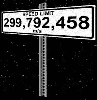
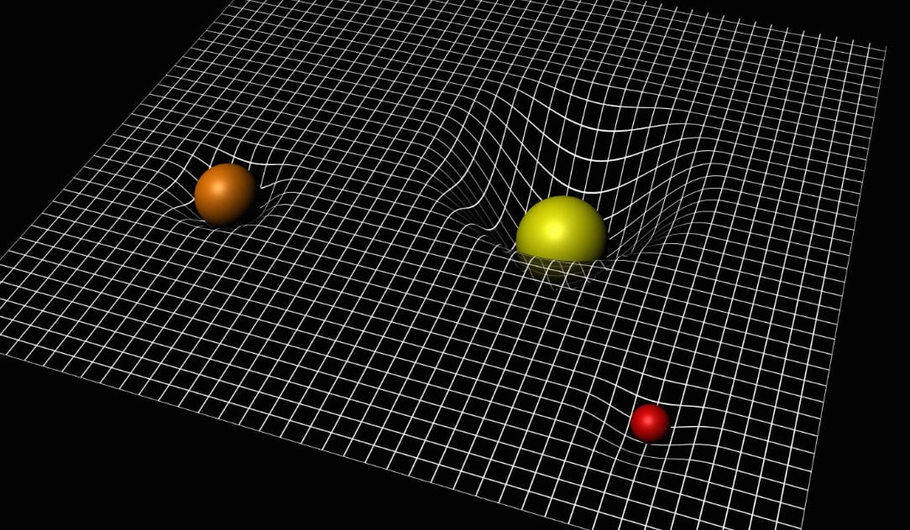
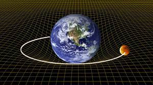

Introduction
Depuis l'Antiquité; les scientifiques ont toujours cherché à comprendre comment le mouvement fonctionne. Cette quête a mené à plusieurs théories, mais trois grandes étapes ont marqué l'évolution de notre compréhension:

~ La relativité Galiléene (ou classique)
~ La relativité restreinte
~ La relativité générale
1. La relativité Galiléene
proposée par Galilée et perfectionée par Newton
Le temps est absolu et le même pour tous.
Les vitesses s'additionnent
Les longueurs ne changent pas
Mais cette vision ne prend pas en compte la vitesse de la lumière ni les effets à des vitesses très élevées.
2. La relativité restreinte
énoncée par Einstein en 1905 pour corriger les limites de la relativité classique. Deux principes:
Les lois de la physique sont les mêmes pour tous les observateurs en mouvement rectiligne uniforme.
La vitesse de la lumière dans le vide est constante et indépendante du mouvement de la source ou de l'observateur.
a) La relativité de la simultanéité
Deux événements séparés dans l'espace ne sont considérés comme simultanés que dans un référentiel particulier. Dans un autre référentiel en mouvement, ces mêmes événements se produiront à des instants différents.
Formule clé: /\t' = Y(/\t - (v/\d/c^2), avec Y=1/sqrt(1-v^2/c^2)
b) La contraction des longueurs
Un objet en mouvement par rapport à un observateur paraît plus court dans la direction du mouvement.
Formule clé: L = L' sqrt(1 - v^2/c^2)
c) La dilatation du temps
C'est un phénomène où le temps passe lentement pour un objet qui se déplace très vite par rapport à un observateur immobile.
Formule clé: T = t'/sqrt(1 - v^2/c^2)
Plus v approche de c, plus le temps "ralentit" pour l'objet en mouvement.
3. La relativité générale
L'espace-temps est une conception physique fondamentale où les trois dimensions de l'espace et la dimension du temps sont inséparables, formant un continuum à quatre dimensions, le "tissu de l'Univers", qui peut être courbé par la masse et l'énergie, créant ainsi la gravité.
La relativité générale est une extension de la relativité restreinte qui prend en compte les effets de la gravitation.
Principes
La relation de l'énergie et la masse
E = mc², où 'c' est la vitesse de la lumière dans le vide. Masse et énergie sont interchangeables.
La Courbure de l'espace-temps
La présence de masse et d'énergie déforme l'espace-temps autour d'elle.
Gravité comme géométrie
Les objets suivent le chemin le plus droit possible dans l'espace-temps courbé par d'autres masses.
Conséquences
1. Déviation de la lumière
2. Ondes gravitationnelles
3. Dilatation gravitationnelle du temps
4. Technologie (GPS intègre des corrections relativistes)
Résumé :
| Théorie | Temps | Gravité |
|---|---|---|
| Galiléenne | Absolu | Force |
| Restreinte | Relatif | Ignorée |
| Générale | Courbé | Géométrie |